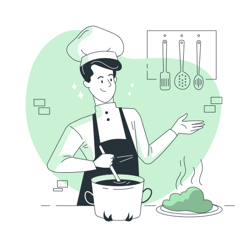

Développeur aujourd’hui ..
frontEnd : html / css / js
BackEnd : node.js / express / ruby
DataBase : postgreSQL / mangoDB

..Cuisinier hier !

Avant de me lancer dans le développement, j'ai travaillé plusieurs années en restauration, un milieu
d'exigeance où la rigueur et le travail d'équipe
sont
essentiels. Cette
expérience m'a appris à gérer la
pression, à respecter des processus stricts et à collaborer efficacement avec une
équipe pour atteindre
un
objectif commun. Que ce soit en cuisine ou dans le code, chaque détail compte, et cette attention à
la
précision
me sert aujourd’hui dans mon approche du développement.